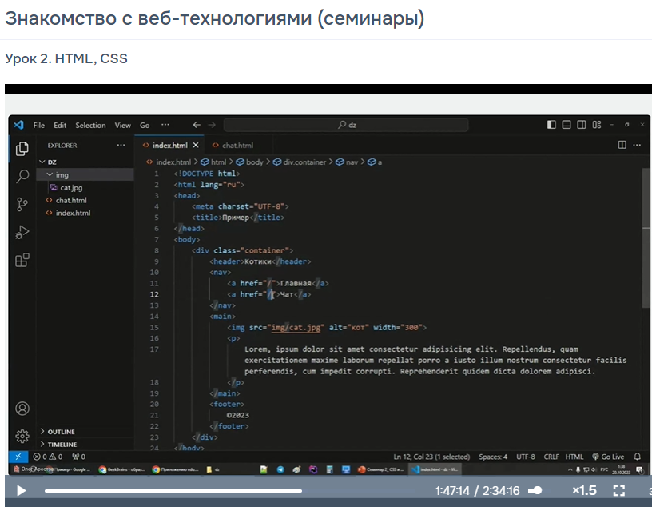

Дополнительные материалы
Основы HTML  Знакомство с веб-технологиями (семинары). 1. На 2 семинаре вы сможете: Рассмотреть способы оформления страниц с помощью HTML и CSS. Разобрать анатомию HTML-документа. Познакомиться с основными тегами. Понять, как селекторы помогают задать внешний вид элементам на веб-странице. Закрепить знания о том, как создаются сайты. 2. По итогам семинара №2 вы будете знать: основные теги HTML; анатомию web-страниц; что такое селекторы; как организована CSS 3. По итогам семинара №2 вы будете уметь: a. создавать HTML-страницы; b. оформлять их с помощью CSS. Познакомиться с основными тегами.